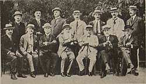
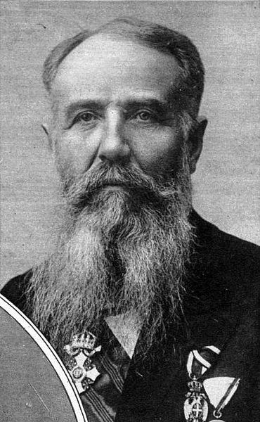

Rођен је 18. 12. 1845. у Зајечару у пекарској породици. Према српским изворима, Пашић је био Србин, пореклом из Рогачева у Македонији, док према бугарским, Пашић није био Србин, него је био Бугарин и са очеве и са мајчине стране, јер, како наводе, мајка му је била Бугарка из Видина, а отац Бугарин из Габрова.

Тек је преудајом за г. Пашића мали Никола био усвојен и добио своје садашње презиме. Тиме се објашњавају и његове родбинске везе и избеглиштво у Бугарску у једном периоду. Школовао се у време честих пресељења зајечарске гимназије, тако да је због школовања као ђак боравио у Неготину и Крагујевцу. Гимназију је завршио у 21. години, углавном одличним успехом.Уписао је 1866. Технички факултет Велике школе у Београду. Српска влада га је као одличног студента 1868. упутила на школовање у Цирих. Студирао је на Политехничкој школи у Цириху техничке науке као државни стипендиста. За време боравка у Швајцарској био је близак Светозару Марковићу, али се касније разишао са њим. После једногодишње праксе на изградњи пруге Будимпешта-Беч вратио се у земљу. Иако је по образовању био инжењер, најмање се бавио својом струком.
Политичку каријеру отпочео је 1878. године као народни посланик, изабран у Зајечару. У идеолошком смислу, прошао је кроз неколико фаза: у младости је био социјалиста и револуционар, у зрелим годинама борац за парламентарну демократију, док је у касним годинама постао конзервативац.
Године 1881. кад је званично основана Радикална странка, Пашић је био први председник Главног одбора. По избијању Тимочке буне напушта земљу (избеглиштво у Бугарску 1883-1889), а децембра 1883. је у одсуству осуђен је на смрт. После абдикације краља Милана (1889), био је амнестиран, вратио се у земљу и поново преузео вођство Радикалне странке.

Председник српске владе постао је први пут 11. 2. 1891. Председник владе је био 1891-1892. и министар иностраних послова Србије од 21. 3. 1892. до 9. 8. 1892. године. У периоду 1893–1894. био је дипломата, представник српске владе у Петрограду. Због неслагања са унутрашњом и спољном политиком последњег Обреновића, убрзо се разишао и са њим.
После неуспелог Ивањданског атентата на бившег краља Милана 1899, као радикалски првак осуђен је на 5 година затвора, али је одмах помилован и пуштен. Следећих неколико година, до Мајског преврата 1903, био је ван политичке сцене. Укључује се у политички живот 1901, а после убиства Александра Обреновића и повратка на власт династије Карађорђевић (1903), Пашић поново преузима вођство Радикалне странке.
Председник владе по други пут постаје 27. новембра 1904. На овом положају је углавном био све до своје смрти 1926. године. Прецизније, председник владе Србије је био 1904-1918 са три прекида и председник владе Краљевине Срба, Хрвата и Словенаца у периоду 1921-1926 са једним прекидом.
Осим ове велике функције био је пет пута председник Народне скупштине, затим министар спољних послова у периодима 1904-05, 1906-08, 1912-18. потом у Краљевини СХС 1921. Осим тога, Пашић је од оснивања 1881. до своје смрти, водио Народну радикалну странку.
Успешно је водио Србију кроз два балканска рата и кроз Први светски рат. Био је председник делегације Србије на Конференцији мира у Букурешту 1913. Почетком 1915. године, као председник српске владе, Никола Пашић позива јеромонаха Николаја Велимировића у Ниш и упућује га у Енглеску и Америку да пропагира српску праведну борбу и да сузбија аустријску пропаганду против Србије. Био је један од потписника Крфске декларације 1917. Био је председник делегације Краљевине Срба Хрвата и Словенаца на Мировној конференцији у Паризу 1919.
Године 1923. постао је почасни грађанин Панчева.